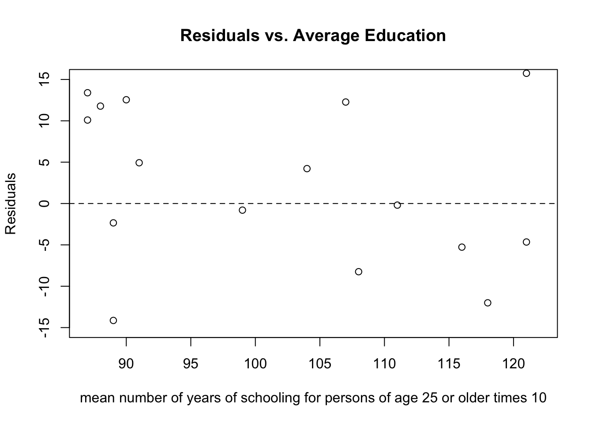
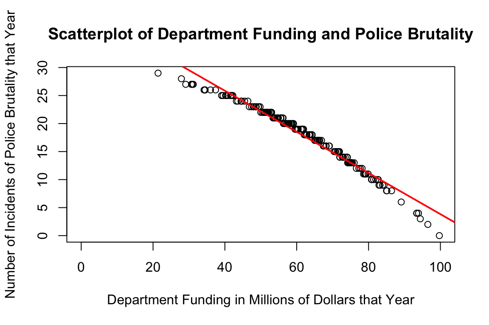

CRIM 250 Assignments
Assignment 1
Problem 1
Install the datasets package on the console below using install.packages("datasets"). Now load the library.
#Install the dataset package
#install.packages("datasets")
#load in the library
library(datasets)Load the USArrests dataset and rename it dat. Note that this dataset comes with R, in the package datasets, so there’s no need to load data from your computer. Why is it useful to rename the dataset?
#Load in the dataset
USArrests## Murder Assault UrbanPop Rape
## Alabama 13.2 236 58 21.2
## Alaska 10.0 263 48 44.5
## Arizona 8.1 294 80 31.0
## Arkansas 8.8 190 50 19.5
## California 9.0 276 91 40.6
## Colorado 7.9 204 78 38.7
## Connecticut 3.3 110 77 11.1
## Delaware 5.9 238 72 15.8
## Florida 15.4 335 80 31.9
## Georgia 17.4 211 60 25.8
## Hawaii 5.3 46 83 20.2
## Idaho 2.6 120 54 14.2
## Illinois 10.4 249 83 24.0
## Indiana 7.2 113 65 21.0
## Iowa 2.2 56 57 11.3
## Kansas 6.0 115 66 18.0
## Kentucky 9.7 109 52 16.3
## Louisiana 15.4 249 66 22.2
## Maine 2.1 83 51 7.8
## Maryland 11.3 300 67 27.8
## Massachusetts 4.4 149 85 16.3
## Michigan 12.1 255 74 35.1
## Minnesota 2.7 72 66 14.9
## Mississippi 16.1 259 44 17.1
## Missouri 9.0 178 70 28.2
## Montana 6.0 109 53 16.4
## Nebraska 4.3 102 62 16.5
## Nevada 12.2 252 81 46.0
## New Hampshire 2.1 57 56 9.5
## New Jersey 7.4 159 89 18.8
## New Mexico 11.4 285 70 32.1
## New York 11.1 254 86 26.1
## North Carolina 13.0 337 45 16.1
## North Dakota 0.8 45 44 7.3
## Ohio 7.3 120 75 21.4
## Oklahoma 6.6 151 68 20.0
## Oregon 4.9 159 67 29.3
## Pennsylvania 6.3 106 72 14.9
## Rhode Island 3.4 174 87 8.3
## South Carolina 14.4 279 48 22.5
## South Dakota 3.8 86 45 12.8
## Tennessee 13.2 188 59 26.9
## Texas 12.7 201 80 25.5
## Utah 3.2 120 80 22.9
## Vermont 2.2 48 32 11.2
## Virginia 8.5 156 63 20.7
## Washington 4.0 145 73 26.2
## West Virginia 5.7 81 39 9.3
## Wisconsin 2.6 53 66 10.8
## Wyoming 6.8 161 60 15.6#rename the USArrests dataset
dat <- USArrestsIt is useful to rename the dataset because it is easier to work with. If the data set had a longer or more complicated name, it would be difficult and time consuming to type out the dataset name every time when you want to perform a function on the data. It also lets you keep track of your work if you make different versions of it so that it is not contaminated by changes that were meant to be on one version and not the other. This will let you replicate the work if changes were made to different versions.
Problem 2
Use this command to make the state names into a new variable called State.
dat$state <- tolower(rownames(USArrests))This dataset has the state names as row names, so we just want to make them into a new variable. We also make them all lower case, because that will help us draw a map later - the map function requires the states to be lower case.
List the variables contained in the dataset USArrests.
#find the variables in the dataset
names(dat)## [1] "Murder" "Assault" "UrbanPop" "Rape" "state"The variables in the USArrests dataset are Murder, Assault, UrbanPop, Rape, and State.
Problem 3
What type of variable (from the DVB chapter) is Murder?
Murder is a quantitative variable from the DVB chapter since it is a count of numbers.
What R Type of variable is it?
Murder is a numeric variable from the R type since it is also a count of numbers and functions such as mean or median can be applied.
Problem 4
What information is contained in this dataset, in general? What do the numbers mean?
The dataset contains arrest numbers for 4 types of crimes within all 50 states. Each state has a corresponding arrest rate for murder, assault, and rape, as well as the percent of urban population within the state. The numbers mean the number of arrests per 100,000 people in that state.
Problem 5
Draw a histogram of Murder with proper labels and title.
hist(dat$Murder, main = "Histogram of Murder Arrests", xlab = "Number of Murder Arrests", ylab = "Frequency")
Problem 6
Please summarize Murder quantitatively. What are its mean and median? What is the difference between mean and median? What is a quartile, and why do you think R gives you the 1st Qu. and 3rd Qu.?
#finding the summary statistics of the murder variable
summary(dat$Murder)## Min. 1st Qu. Median Mean 3rd Qu. Max.
## 0.800 4.075 7.250 7.788 11.250 17.400The mean of the murder variable is 7.788 murders, while the median is 7.250 murders. The mean is the sum of all data values divided by the number of values, or the average of the values within the dataset. The median, however, is the middle value after all of the values are put in numerical order. When distributions are skewed or there are outliers in the data, the median is better to use than the mean because the mean changes with skew or outliers and the median is more robust. A quartile is each of three values in which the data can be distributed into even fourths. I think that R gives us the 1st quartile and 3rd quartile because they can be used to calculate the interquartile range, which tells us the interval where half of the values within the data set lie. The median is also the 2nd quartile, so the three groups are given that split the data in even fourths.
Problem 7
Repeat the same steps you followed for Murder, for the variables Assault and Rape. Now plot all three histograms together. You can do this by using the command par(mfrow=c(3,1)) and then plotting each of the three.
#make a histogram of assault
hist(dat$Assault, main = "Histogram of Assault Arrests", xlab = "Number of Assault Arrests", ylab = "Frequency")
#make a histogram of rape
hist(dat$Rape, main = "Histogram of Rape Arrests", xlab = "Number of Rape Arrests", ylab = "Frequency")
#plot all three histograms together
par(mfrow=c(3,1))
hist(dat$Murder, main = "Histogram of Murder Arrests", xlab = "Number of Murder Arrests", ylab = "Frequency")
hist(dat$Assault, main = "Histogram of Assault Arrests", xlab = "Number of Assault Arrests", ylab = "Frequency")
hist(dat$Rape, main = "Histogram of Rape Arrests", xlab = "Number of Rape Arrests", ylab = "Frequency")
What does the command par do, in your own words (you can look this up by asking R ?par)?
Par can be used to set the parameters on a graph, making it easier to combine multiple graphs into one.
What can you learn from plotting the histograms together?
By plotting these histograms together, you can compare the arrest rates for each crime. Murders happen the least frequently and assaults happen the most frequently. You can also see that the histogram for murder is unimodal and skewed, the histogram for assaults is bimodal, and the histogram for rapes is also unimodal and skewed.
Problem 8
In the console below (not in text), type install.packages("maps") and press Enter, and then type install.packages("ggplot2") and press Enter. This will install the packages so you can load the libraries.
#install and load in the maps and ggplot2 packages
library('maps')
library('ggplot2') Run this code:
ggplot(dat, aes(map_id=state, fill=Murder)) +
geom_map(map=map_data("state")) +
expand_limits(x=map_data("state")$long, y=map_data("state")$lat) What does this code do? Explain what each line is doing.
What does this code do? Explain what each line is doing.
The first line above the map code loads the library for both packages. The first line of the map code is creating a plot of murder. The ggplot function is telling R to create a plot, the “dat” is telling R which dataset to use in the plot, and the “aes(map_id=state, fill=Murder))” is telling R to plot each state and fill it with the corresponding murder arrest rate. The geom_map function creates shapes for a reference map, and the map=map_data(“state”) function is telling R to map the data that corresponds with the state variable that we created earlier. The expand_limits function makes sure that the entire map fits within the plot of the graph and the (x=map_data(“state”)\(long, y=map_data("state")\)lat) tells R which data to base the plot limits off of, which in this case is the state data.
Assignment 2
Problem 1
Load in the data.
dat <- read.csv(file = "data/Assignment2datacopy.csv")What are the dimensions of the dataset?
dim(dat)## [1] 171 7There are 171 columns and 7 rows (or 171 respondents and 7 questions)
Problem 2
Describe the variables in the dataset.
names(dat)## [1] "mjage" "cigage" "iralcage" "age2" "sexatract" "speakengl"
## [7] "irsex"There are 7 variables in the dataset: 1. “mjage” (How old were you the first time you used marijuana or hashish?) 2. “cigage” (How old were you when you first started smoking cigarettes everyday?) 3. “iralcage” (How old were you when you first tried alcohol?) 4. “age2” (Recoded final edited age (since respondents had multiple chances to change their age throughout the survey)) 5. “sexatract” (Sexual attraction) 6. “speakengl” (How well do you speak English) 7. “irsex” (Imputation revised gender)
Mjage, cigage, and iralcage are numeric variables (or quantitative) because the respondent gave an exact number for their answers for each variable and functions like mean can be applied to find the average age the respondents tried marijuana, cigarettes, and alcohol. Age2, sexatract, speakengl, and irsex are categorical variables because the respondents’ answers were split into categories when coded. Because respondents had the opportunity to change their age throughout the interview, the age variable was calculated from the raw birth date and the final edited interview date, the age entered in the questionnaire roster (if it exists), and the pre-interview screener age because interviewees had the opportunity to change their age throughout the interview.
What is this dataset about? Who collected the data, what kind of sample is it, and what was the purpose of generating the data? The dataset is a small sample from the National Survey of Drug Use and Health, which was conducted by the Center for Behavioral Health Statistics and Quality (CBHSQ, formerly the Office of Applied Studies) within the Substance Abuse and Mental Health Services Administration (SAMHSA) and is conducted by RTI International, Research Triangle Park, North Carolina. The survey was conducted through a computer assisted administration, and was changed from a strictly national design to a state-based sampling plan in 1999. The primary purpose of generating the data was to measure the prevalence and correlation of substance use and mental health issues in the United States, according to the NSDUH 2019 Codebook.
Problem 3: Age and gender
What is the age distribution of the sample like? Make sure you read the codebook to know what the variable values mean.
hist(dat$age2, main = "Histogram of Recoded Final Edited Age Categories", xlab = "Recoded Final Edited Age Categories") The age variable is skewed to the left, with the majority of the values in the 14-16 bin (which means that the majority of the people in the dataset are 30 to 64 years old, according to the codebook). There are fewer people who were very young when filling out the survey, with only a few in the 4-6 and 6-8 bins (meaning that the respondents in these bins were 15-17 and 18-19, respectively).
The age variable is skewed to the left, with the majority of the values in the 14-16 bin (which means that the majority of the people in the dataset are 30 to 64 years old, according to the codebook). There are fewer people who were very young when filling out the survey, with only a few in the 4-6 and 6-8 bins (meaning that the respondents in these bins were 15-17 and 18-19, respectively).
Do you think this age distribution representative of the US population? Why or why not?
min(dat$age2) #the youngest respondent was 15 (category 4)## [1] 4max(dat$age2) #the oldest respondent was 65 years old or older (category 17)## [1] 17Yes, I think that this age distribution is representative of the US population. The survey was conducted in order to evaluate drug use, and I would think that people would not try drugs before turning 15 (the youngest respondent) and very few people would continue using drugs when they are 65 years old or older (the oldest respondent). Also, according to the codebook, the participants were randomly selected to complete the survey, which fulfills one requirement of a representative sample. It makes sense that the number of respondents increased when the respondents were 19 to 23 (8 to 12 categories) as those are the ages when most people would be exposed to marijuana, drugs, and alcohol for the first time, and that the number of respondents increased again when the respondents were 24 to 64 (categories 12 to 16), as those are the ages that people would continue to use marijuana, drugs, and alcohol as adults (especially after potentially being exposed in college). I also think that it makes sense that the majority of respondents were 34 to 64 years old, because older generations are more likely to have smoked cigarettes everyday before perception and knowledge changed.
Is the sample balanced in terms of gender? If not, are there more females or males?
table(dat$irsex, dat$age2)##
## 4 6 7 8 9 10 11 12 13 14 15 16 17
## 1 1 1 1 0 1 1 3 3 14 10 33 14 9
## 2 1 0 0 2 6 2 3 4 13 6 29 10 4The sample is not balanced in terms of gender. There were 91 males included in the dataset and 80 females included.
Use this code to draw a stacked bar plot to view the relationship between sex and age. What can you conclude from this plot?
tab.agesex <- table(dat$irsex, dat$age2)
barplot(tab.agesex,
main = "Stacked barchart",
xlab = "Age category", ylab = "Frequency",
legend.text = rownames(tab.agesex),
beside = FALSE) # Stacked bars (default) From this plot, I can conclude that more males answered the survey than females, as most age categories have a higher frequency of males than females (especially in categories 6 and 7). I can also conclude than more older males answered the survey than older females. As indicated in both the plot and the table of sex and age categories, the highest five categories (13, 14, 15, 16, and 17) had more male responses than females (1 more, 4 more, 4 more, 4 more, and 5 more, respectively).
From this plot, I can conclude that more males answered the survey than females, as most age categories have a higher frequency of males than females (especially in categories 6 and 7). I can also conclude than more older males answered the survey than older females. As indicated in both the plot and the table of sex and age categories, the highest five categories (13, 14, 15, 16, and 17) had more male responses than females (1 more, 4 more, 4 more, 4 more, and 5 more, respectively).
Problem 4: Substance use
For which of the three substances included in the dataset (marijuana, alcohol, and cigarettes) do individuals tend to use the substance earlier?
boxplot(dat$mjage, dat$cigage, dat$iralcage, main = "Substance Usage and Age",
ylab="Age", xlab="Types of Substances",
names=c("Marijuana or Hashish","Cigarettes","Alcohol")) Based on the boxplot of substance usage and age, it looks like individuals tend to use alcohol earlier than marijuana / hashish or earlier than they started smoking cigarettes every day.
Based on the boxplot of substance usage and age, it looks like individuals tend to use alcohol earlier than marijuana / hashish or earlier than they started smoking cigarettes every day.
min(dat$mjage) ## [1] 7min(dat$cigage) ## [1] 10min(dat$iralcage) ## [1] 5Looking at the minimum values for each type of substance, the minimum recorded age for when an individual first tried marijuana / hashish was 7, the minimum recorded age for when an individual first started smoking cigarettes everyday was 10, and the minimum recorded age for when an individual first tried alcohol was 5. This also confirms that like individuals tend to use alcohol earlier than marijuana / hashish or earlier than they started smoking cigarettes every day.
Problem 5: Sexual attraction
What does the distribution of sexual attraction look like? Is this what you expected?
dat.sexat <- subset(dat$sexatract, subset = dat$sexatract<7)
hist(dat.sexat, main = "Distribution of Sexual Attraction", xlab = "Sexual Attraction") The distribution of sexual attraction is skewed to the right, with the majority of respondents answering that they are only attracted to the opposite sex (category one). The next greatest frequency of response is that the respondent is mostly attracted to the opposite sex (category 2), and then followed by the respondent is equally attracted to males and females (category 3). This is exactly what I expected because I would think that an overwhelming majority of people would be straight as that is most common in the United States.
The distribution of sexual attraction is skewed to the right, with the majority of respondents answering that they are only attracted to the opposite sex (category one). The next greatest frequency of response is that the respondent is mostly attracted to the opposite sex (category 2), and then followed by the respondent is equally attracted to males and females (category 3). This is exactly what I expected because I would think that an overwhelming majority of people would be straight as that is most common in the United States.
What is the distribution of sexual attraction by gender?
table(dat$irsex, dat$sexatract)##
## 1 2 3 4 5 6 99
## 1 82 3 0 1 2 1 2
## 2 54 13 9 2 1 0 1library(dplyr)
dat$sexatract <- dat$sexatract %>% na_if(., "85")
dat$sexatract <- dat$sexatract %>% na_if(., "94")
dat$sexatract <- dat$sexatract %>% na_if(., "97")
dat$sexatract <- dat$sexatract %>% na_if(., "98")
dat$sexatract <- dat$sexatract %>% na_if(., "99")
dat.five <- data.frame(dat$sexatract, dat$irsex)
barplot <- barplot(table(dat.five$dat.irsex, dat.five$dat.sexatract),
main = "Sexual Attraction and Gender",
xlab = "Sexaul Attraction Category",
ylab = "Count",
border = "black",
col = c("hotpink1", "blue"),
ylim = c(0,171), legend.text = c("Males","Females"),
)
barplot## [1] 0.7 1.9 3.1 4.3 5.5 6.7Looking at the stacked bar plot of sexual attraction and gender, it confirms what was seen in the table that more males than females responded that they are only attracted to the opposite sex (category one). It also confirms that more females than males answered that they are mostly attracted to the opposite sex (category 2) and are equally attracted to males and females (category 3).
Problem 6: English speaking
What does the distribution of English speaking look like in the sample?
hist(dat$speakengl, main = "Histogram of English Speakers", xlab = "How Well You Speak English (1 - lowest, 4 - highest)")The distribution of English speaking looks extremely skewed to the right, with the majority of respondents answering that they speak English very well (category one).
table(dat$speakengl)##
## 1 2 3
## 161 8 2Looking at the table of respondents who answered the “Speak English” question,161 people answered that the speak English very well, eight answered that they speak English well, and only two answered that they speak English not well. This confirms the skew seen in the histogram.
Is this what you might expect for a random sample of the US population? This is what I would expect a random sample of the US population to look like, as the majority of people in the US speak English and speak it very well. Even if there were people included in the random sample from places that do not speak as much English, like Texas or Miami, for example, the large amount of people who do speak English well would account for what is seen in the histogram.
Are there more English speaker females or males?
table(dat$irsex, dat$speakengl)##
## 1 2 3
## 1 84 7 0
## 2 77 1 2barplot(table(dat$irsex, dat$speakengl),
main="English Speaking Level and Gender",
xlab="English Speaking Level Category",
ylab="Count",
col=c("hotpink1", "blue"),
ylim = c(0,200), legend.text = c("Males","Females")
) Looking at the stacked bar plot of English speaking level and gender, it looks like the number of males and females that answered that they spoke English very well was pretty close, will a few more males (exactly 11, according to the table). The plot also confirms that more men responded that they spoke English well than women, and that no men responded that they spoke English not well.
Looking at the stacked bar plot of English speaking level and gender, it looks like the number of males and females that answered that they spoke English very well was pretty close, will a few more males (exactly 11, according to the table). The plot also confirms that more men responded that they spoke English well than women, and that no men responded that they spoke English not well.
Exam 1
Instructions
Create a folder in your computer (a good place would be under Crim 250, Exams).
Download the dataset from the Canvas website (fatal-police-shootings-data.csv) onto that folder, and save your Exam 1.Rmd file in the same folder.
Download the README.md file. This is the codebook.
Load the data into an R data frame.
dat <- read.csv(file = "data/fatal-police-shootings-datacopy.csv")Problem 1 (10 points)
- Describe the dataset. This is the source: https://github.com/washingtonpost/data-police-shootings . Write two sentences (max.) about this.
The dataset is made up of every fatal police shooting in the US since January 1, 2015, as collected by the Washington Post. The dataset includes 6594 people and 17 variables, which contain important information about each shooting, such as the name of the person shot, their mental health status, and their race.
- How many observations are there in the data frame?
dim(dat)## [1] 6594 17There are 6594 observations in the data frame.
- Look at the names of the variables in the data frame. Describe what “body_camera”, “flee”, and “armed” represent, according to the codebook. Again, only write one sentence (max) per variable.
names(dat)## [1] "id" "name"
## [3] "date" "manner_of_death"
## [5] "armed" "age"
## [7] "gender" "race"
## [9] "city" "state"
## [11] "signs_of_mental_illness" "threat_level"
## [13] "flee" "body_camera"
## [15] "longitude" "latitude"
## [17] "is_geocoding_exact"The “body_camera” variable indicates whether or not news reports stated that a police officer that was at the scene of the incident was wearing a body camera and may have recorded parts of the incident. The “flee” variable indicates whether or not news reports have started that the victim was moving away from the officer during the incident. The “armed” variable indicates whether or not the victim was armed with any type of weapon that could have been thought to as possible to cause harm by an officer.
- What are three weapons that you are surprised to find in the “armed” variable? Make a table of the values in “armed” to see the options.
head(table(dat$armed))##
## air conditioner air pistol Airsoft pistol ax
## 207 1 1 3 24
## barstool
## 1Three weapons that I was surprised to find in the dataset were an air conditioner, microphone, and pen.I feel like an air conditioner and microphone are definitely unusual weapons, and the pen does not seem like it would do anything against an officer’s gun.
Problem 2 (10 points)
- Describe the age distribution of the sample. Is this what you would expect to see?
hist(dat$age, main = "Age Distribution of the Sample", xlab = "Age", xlim = c(0, 100))
The age distribution of the sample is skewed to the right, with a large number of values between ages 20 and 40. This indicates that most people killed by the police in fatal shootings are young, and that older people between ages 60 and 100 are being killed in fatal police shootings at a much lower rate. This is exactly what I expected to see in the age distribution because younger people, especially in the 20 to 40 year old range, are more likely to have encounters with the police, as well as be healthy and be able to try to talk to or provoke the police and try to run away.
- To understand the center of the age distribution, would you use a mean or a median, and why? Find the one you picked.
median(dat$age, na.rm = TRUE)## [1] 35To understand the center of the age distribution, I would use the median because the data is skewed to the right and the median is a more robust measure of skewed data as the mean changes with skew or outliers. The median of the age distribution for this dataset is 35 years old, and I removed the missing values since there are only 308 of them out of 6594 observations and they indicate that the person’s age was unknown or missing.
- Describe the gender distribution of the sample. Do you find this surprising?
table(dat$gender)##
## F M
## 3 293 6298counts <- table(dat$gender, useNA = "ifany")
barplot(counts, main = "Gender Distrubution", xlab = "Gender", ylab = "Counts", names=c("None", "Females", "Males"))
The gender distribution is definitely skewed, with 6005 more males being fatally shot by police officers than females. This can also be seen in the barplot, with the majority of respondents being males. There were also 3 unknown values in the data, indicating no gender according to the codebook. I do not find this surprising, however, because the majority of police shootings that we hear about in the news are of males, with the rare occurrence of a female. While females are definitely still being killed by the police, it is happening disproportionately to males which is indicated by both the news and the data.
Problem 3 (10 points)
- How many police officers had a body camera, according to news reports? What proportion is this of all the incidents in the data? Are you surprised that it is so high or low?
table(dat$body_camera)##
## False True
## 5684 910910/6594## [1] 0.1380042According to the news reports, 910 police officers had a body camera, which is about 13.80% of all incidents in the data. I am surprised that this is so low because I would think that after the 2014 killing of Michael Brown and subsequent police shootings, police offices and the public would call for an increased use of body cameras.
- In how many of the incidents was the victim fleeing? What proportion is this of the total number of incidents in the data? Is this what you would expect?
table(dat$flee)##
## Car Foot Not fleeing Other
## 491 1058 845 3952 2481058+845+248 #fleeing## [1] 21512151/6594## [1] 0.3262056There are 2151 incidents of the victim fleeing, which is about 32.62% of all incidents in the data. This was calculated by including the 491 unknown observations in the “not fleeing” group, as what this category of observations represents was not included in the codebook and cannot be assumed to be fleeing, especially since there is already an “other” group. This is pretty much what I would expect because I would think that the majority of people when interacting with the police would not flee, since it is known that the consequences would probably be worse because of it.
Problem 4 (10 points) - Answer only one of these (a or b).
- Describe the relationship between the variables “body camera” and “flee” using a stacked barplot. What can you conclude from this relationship?
Hint 1: The categories along the x-axis are the options for “flee”, each bar contains information about whether the police officer had a body camera (vertically), and the height along the y-axis shows the frequency of that category).
Hint 2: Also, if you are unsure about the syntax for barplot, run ?barplot in R and see some examples at the bottom of the documentation. This is usually a good way to look up the syntax of R code. You can also Google it.
library(ggplot2)
ggplot(dat, aes(fill=body_camera, y=frequency(body_camera), x=flee)) +
geom_bar(position="stack", stat="identity") +
ggtitle("Stacked Barplot of Body Camera Usage and Victim Fleeing") +
labs(y="Frequency of Body Camera Usage", x = "How the Victim Fled") +
labs(fill = "Body Camera Usage")
From the plot, it can be seen that everybody that fled from the police did so more often when the police were not wearing a body camera. It looks like not fleeing and the police wearing a body camera are related, as when more police wore a body camera less people fled (since the not fleeing bar had the most police wearing a body camera). You can also see that the most people fled by using a car, which during those indicidents police were less likely to wear a body camera than to actually have it on. While it is unknown what the first bar represents as it is left out of the codebook, it follows the same pattern of the other bars that the police did not wear body cameras more often than they did.
- Describe the relationship between age and race by using a boxplot. What can you conclude from this relationship?
Hint 1: The categories along the x-axis are the race categories and the height along the y-axis is age.
Hint 2: Also, if you are unsure about the syntax for boxplot, run ?boxplot in R and see some examples at the bottom of the documentation. This is usually a good way to look up the syntax of R code. You can also Google it.
boxplot <- ggplot(dat, aes(x=race, y=age)) +
geom_boxplot() +
ggtitle("Boxplot of Race and Age")
boxplot
The relationship between race and age looks pretty even, with the median values of age for each race category between 25 and 37. The range for all ages except White is between 12 and 62, while the White range extends from about 5 to 80. There are a significant number of outliers, however, for the Black, Hispanic, and White categories. The NAs for age were removed, and the unknown race category was plotted first on the graph but cannot be interpreted as it is not in the codebook. From this relationship, I can conclude that on average, all races of a similar age between 25 and 37 are killed at similar rates. While there are some outliers to this, especially for the Black and Hispanic categories, all of the medians of age for each race is almost identical.
Extra credit (10 points)
- What does this code tell us?
mydates <- as.Date(dat$date)
head(mydates)
(mydates[length(mydates)] - mydates[1])The as.Date function in R converts the string of date values into actual dates that functions can be applied to. The head function makes sure that this conversion was done correctly by showing us the first 6 values of the data. The “(mydates[length(mydates)] - mydates[1])” function tells us the time difference between the last observation (which is the entire length of mydates) and the first obeservation (which is "mydates[1]), which ends up being 2458 days.
- On Friday, a new report was published that was described as follows by The Guardian: “More than half of US police killings are mislabelled or not reported, study finds.” Without reading this article now (due to limited time), why do you think police killings might be mislabelled or underreported?
I think that police killings may be mislabeled or underreported because police offices do not want to admit to have killing anyone or engaging in illegal or overly forceful activities. I think that there may be disparities between the police reporting shooting and witnesses observing shootings, as police offices may be less likely to do so. I also think that police offices may mislabel the shooting as something that was not their fault so that they do not get attacked by the public for the incident.
- Regarding missing values in problem 4, do you see any? If so, do you think that’s all that’s missing from the data?
Yes, I saw missing values in problem 4 in the age category. The race and fleeing variable also had unknown values, as it was not indicated by the codebook. I do not think that this is all that is missing from the data, as other variables, such as gender, also had missing or unknown values. I think that going along with part b, some of the data reported was mislabeled or incorrect, and this may be represented by the missing or unknown values in the data.
Assignment 3
Load the data.
library(readr)
library(knitr)
dat.crime <- read_delim("/Users/briannafisher/Dropbox/CRIM250/Data/crime_simple.txt", delim = "\t")This is a dataset from a textbook by Brian S. Everitt about crime in the US in 1960. The data originate from the Uniform Crime Report of the FBI and other government sources. The data for 47 states of the USA are given.
Here is the codebook:
R: Crime rate: # of offenses reported to police per million population
Age: The number of males of age 14-24 per 1000 population
S: Indicator variable for Southern states (0 = No, 1 = Yes)
Ed: Mean of years of schooling x 10 for persons of age 25 or older
Ex0: 1960 per capita expenditure on police by state and local government
Ex1: 1959 per capita expenditure on police by state and local government
LF: Labor force participation rate per 1000 civilian urban males age 14-24
M: The number of males per 1000 females
N: State population size in hundred thousands
NW: The number of non-whites per 1000 population
U1: Unemployment rate of urban males per 1000 of age 14-24
U2: Unemployment rate of urban males per 1000 of age 35-39
W: Median value of transferable goods and assets or family income in tens of $
X: The number of families per 1000 earning below 1/2 the median income
We are interested in checking whether the reported crime rate (# of offenses reported to police per million population) and the average education (mean number of years of schooling for persons of age 25 or older) are related.
Problem 1
How many observations are there in the dataset? To what does each observation correspond?
dim(dat.crime)## [1] 47 14There are 47 observations in the dataset, with 14 different variables. Each observation corresponds to a particular state.
Problem 2
Draw a scatterplot of the two variables. Calculate the correlation between the two variables. Can you come up with an explanation for this relationship?
plot(dat.crime$Ed, dat.crime$R, main = "Scatterplot of Average Education and Reported Crime Rate", xlab = "mean number of years of schooling for persons of age 25 or older times 10", ylab = "# of offenses reported to police per million population")
cor(dat.crime$R, dat.crime$Ed)## [1] 0.3228349The correlation of the reported crime rate (measured in the number of offenses reported to police per million population) and average education (measured in the mean number of years of schooling for persons of age 25 or older times 10) is 0.32, which is pretty weak. The scatterplot of these variables proves this, as it is positive but fairly spread out. One explanation for this relationship may be that states with bigger cities are populated by people with more years of education than states with rural areas, and states with bigger cities have higher reported crime rates. While these two variables specificaly are not highly correlated (since the value was 0.32), high average education and high reported crime rates are both characteristic of states with big cities.
Problem 3
Regress reported crime rate (y) on average education (x) and call this linear model crime.lm and write the summary of the regression by using this code, which makes it look a little nicer {r, eval=FALSE} kable(summary(crime.lm)$coef, digits = 2).
crime.lm <- lm(formula = R ~ Ed, data = dat.crime)
summary(crime.lm)##
## Call:
## lm(formula = R ~ Ed, data = dat.crime)
##
## Residuals:
## Min 1Q Median 3Q Max
## -60.061 -27.125 -4.654 17.133 91.646
##
## Coefficients:
## Estimate Std. Error t value Pr(>|t|)
## (Intercept) -27.3967 51.8104 -0.529 0.5996
## Ed 1.1161 0.4878 2.288 0.0269 *
## ---
## Signif. codes: 0 '***' 0.001 '**' 0.01 '*' 0.05 '.' 0.1 ' ' 1
##
## Residual standard error: 37.01 on 45 degrees of freedom
## Multiple R-squared: 0.1042, Adjusted R-squared: 0.08432
## F-statistic: 5.236 on 1 and 45 DF, p-value: 0.02688Problem 4
- Are the four assumptions of linear regression satisfied? To answer this, draw the relevant plots. (Write a maximum of one sentence per assumption.)
#linearity and independence assumptions - residuals vs. x plot
plot(dat.crime$Ed, crime.lm$residuals, ylim=c(-15,15), main="Residuals vs. Average Education", xlab="mean number of years of schooling for persons of age 25 or older times 10", ylab="Residuals")
abline(h = 0, lty="dashed")
#linearity assumption - residuals vs. fitted
plot(crime.lm, which=1)
Both the residuals vs. x plot and residuals vs. fitted plot show no clear linear patterns and the residuals appear evenly spread out above and below both lines, so it satisfies the linearity assumption (because there are also only 47 observations, with the number that are given we can assume this is good enough for linear regression).
Looking again at the residuals vs. x plot, we see that there are no patterns in the plot, so the independence assumption is fulfilled.
#equal variance / homoscedasticity assumption - resuiduals vs. predicted values
plot(crime.lm, which=3)
Looking at the residuals plotted against the predicted values, the red line looks pretty flat and there are no significant trends in the red line, so the equal variance / homoscedasticity assumption looks satisfied, but the scatterplot we made earlier shows no strong linear association.
#Normal population assumption - residuals vs. leverage plot
plot(crime.lm, which=5)#Normal population assumption - Normal qq plot
plot(crime.lm, which=2)
The residuals vs. leverage plot fulfills the normal population assumption as the values are within Cook’s distance, but the normal qq plot looks like there is an issue with some of the values curving, especially since we know these are not outliers.
Problem 5
Is the relationship between reported crime and average education statistically significant? Report the estimated coefficient of the slope, the standard error, and the p-value. What does it mean for the relationship to be statistically significant?
The relationship between reported crime rates and average education is statistically significant. The coefficient of the slope is 1.1161, which means that on average, for every additional year of average education, the reported crime rate increases by 1.1161 offenses reported to police per million population. The standard error is 0.4878, which means that the number of offenses reported to the police per million population can vary by 0.4878 offenses. The p-value is 0.02688, which means that we can reject the null hypothesis and conclude that there is a relationship between reported crime rates and average education. For the relationship to be statistically significant, it would mean that the p-value is less than 0.05, telling us that it is unlikely that the relationship between reported crime rates and average education is due to chance.
Problem 6
How are reported crime and average education related? In other words, for every unit increase in average education, how does reported crime rate change (per million) per state?
On average, for every additional year of average education, the reported crime rate increases by 1.1161 offenses reported to police per million population per state.
Problem 7
Can you conclude that if individuals were to receive more education, then crime will be reported more often? Why or why not?
You cannot conclude that if individuals were to receive more education, then crime will be reported more often. While the p-value indicates that there is some relationship between the two variables, the correlation between them is only 0.32 and the r-squared value is 0.1042. Neither of these values indicate a strong relationship between average education and reported crime rate. This statement also implies causation, that if people received more education then crime will decrease. Causation cannot be assumed, as there may be other causes or hidden variables that influence the decrease in crime rate with increased education. Similarly, this dataset is in relation to states, not individuals, so this statement could not be proven by this linear model.
Exam 2
Instructions
Create a folder in your computer (a good place would be under Crim 250, Exams).
Download the dataset from the Canvas website (sim.data.csv) onto that folder, and save your Exam 2.Rmd file in the same folder.
Data description: This dataset provides (simulated) data about 200 police departments in one year. It contains information about the funding received by the department as well as incidents of police brutality. Suppose this dataset (sim.data.csv) was collected by researchers to answer this question: “Does having more funding in a police department lead to fewer incidents of police brutality?”
Codebook:
- funds: How much funding the police department received in that year in millions of dollars.
- po.brut: How many incidents of police brutality were reported by the department that year.
- po.dept.code: Police department code
Problem 1: EDA (10 points)
Describe the dataset and variables. Perform exploratory data analysis for the two variables of interest: funds and po.brut.
dat <- read.csv(file = '/Users/briannafisher/Dropbox/CRIM250/CRIM 250 Github/BriannaFisher/data/sim.data.2.csv')
dim(dat)## [1] 200 3names(dat)## [1] "po.dept.code" "funds" "po.brut"The dataset has 200 observations and 3 variables, with each observation corresponding to a particular police department. The variables are “po.dept.code”, which is the police department code, “funds”, which is the amount of funding the department received that year in millions of dollars, and “po.brut”, which is the number of incidents of police brutality reported by the department that year.
plot(dat$funds, dat$po.brut, main = "Scatterplot of Department Funding and Police Brutality", xlab = "Department Funding in Millions of Dollars that Year", ylab = "Number of Incidents of Police Brutality that Year", xlim = c(0,100))cor(dat$funds, dat$po.brut)## [1] -0.9854706Looking at the scatterplot of department funding and police brutality, it looks like the two have a strong, negative association. As department funding increases, it looks like reported police brutality incidents decreases. The two variables also have a correlation of -0.985, indicating that the two are strongly, negatively correlated.
Problem 2: Linear regression (30 points)
- Perform a simple linear regression to answer the question of interest. To do this, name your linear model “reg.output” and write the summary of the regression by using “summary(reg.output)”.
reg.output <- lm(formula = po.brut ~ funds, data = dat)
summary(reg.output)##
## Call:
## lm(formula = po.brut ~ funds, data = dat)
##
## Residuals:
## Min 1Q Median 3Q Max
## -3.9433 -0.2233 0.2544 0.5952 1.1803
##
## Coefficients:
## Estimate Std. Error t value Pr(>|t|)
## (Intercept) 40.543069 0.282503 143.51 <2e-16 ***
## funds -0.367099 0.004496 -81.64 <2e-16 ***
## ---
## Signif. codes: 0 '***' 0.001 '**' 0.01 '*' 0.05 '.' 0.1 ' ' 1
##
## Residual standard error: 0.9464 on 198 degrees of freedom
## Multiple R-squared: 0.9712, Adjusted R-squared: 0.971
## F-statistic: 6666 on 1 and 198 DF, p-value: < 2.2e-16- Report the estimated coefficient, standard error, and p-value of the slope. Is the relationship between funds and incidents statistically significant? Explain.
The relationship between reported incidents of police brutality and department funding is statistically significant. The estimated coefficient is -0.367, which means that one unit higher of funding is associated with 0.367 less reported incidents of police brutality. The standard error is 0.0045, which means that the number of reported incidents of police brutality can vary by 0.0045 incidents. The p-value is less than 2.2e-16, which means that we can reject the null hypothesis and conclude that there is a relationship between reported incidents of police brutality and department funding. For the relationship to be statistically significant, it would mean that the p-value is less than 0.05 (which 2.2e-16 is), telling us that it is unlikely that the relationship between reported incidents of police brutality and department funding is due to chance.
- Draw a scatterplot of po.brut (y-axis) and funds (x-axis). Right below your plot command, use abline to draw the fitted regression line, like this:
plot(dat$funds, dat$po.brut, main = "Scatterplot of Department Funding and Police Brutality", xlab = "Department Funding in Millions of Dollars that Year", ylab = "Number of Incidents of Police Brutality that Year", xlim = c(0,100))
abline(reg.output, col = "red", lwd=2) Does the line look like a good fit? Why or why not?
Looking at the scatterplot, the line does not look like a good fit. The points on the scatterplot look curved, with the values on both ends of the line curving away from the line. If the line was a good fit, it would have no pattern and the data would also form a straight line. However, looking at the regression output, the R squared is 0.9712, indicating that the model fits the data incredibly well. Because my eyes can be deceiving and I changed the x-axis of the plot to include 0 squishing the data more towards the end of the plot, I would go with the R squared value and say that the line is a good fit.
- Are the four assumptions of linear regression satisfied? To answer this, draw the relevant plots. (Write a maximum of one sentence per assumption.) If not, what might you try to do to improve this (if you had more time)?
Assumption 1
#linearity and independence assumptions - residuals vs. x plot
plot(dat$funds, reg.output$residuals, ylim=c(-15,15), main="Residuals vs. Department Funding", xlab="Department Funding in Millions of Dollars that Year", ylab="Residuals")
abline(h = 0, lty="dashed")
#linearity assumption - residuals vs. fitted
plot(reg.output, which=1) Because both the residuals vs. x plot and residuals vs. fitted plot show clear curved patterns in the plots instead of no pattern at all, I would say that the linearity assumption is not satisfied.
Because both the residuals vs. x plot and residuals vs. fitted plot show clear curved patterns in the plots instead of no pattern at all, I would say that the linearity assumption is not satisfied.
Assumption 2 Looking again at the residuals vs. x plot, we see that there is a curved pattern in the plot, so the independence assumption is not satisfied.
Assumption 3
#equal variance / homoscedasticity assumption - resuiduals vs. predicted values
plot(reg.output, which=3) Looking at both the scatterplot from question 1 and the scale-location plot, there is a clear pattern in the plot, so the equal variance / homoscedasticity assumption is not satisfied.
Looking at both the scatterplot from question 1 and the scale-location plot, there is a clear pattern in the plot, so the equal variance / homoscedasticity assumption is not satisfied.
Assumption 4
#Normal population assumption - residuals vs. leverage plot
plot(reg.output, which=5)
#Normal population assumption - Normal qq plot
plot(reg.output, which=2) Looking at the residuals vs. leverage plot (it looks like many values are clustered at the top of the line) and the normal qq plot (the values on the ends of the line are curving away from the line), the normal population assumption is not satisfied.
Looking at the residuals vs. leverage plot (it looks like many values are clustered at the top of the line) and the normal qq plot (the values on the ends of the line are curving away from the line), the normal population assumption is not satisfied.
Because none of the assumptions are satisfied, if I had more time I would perform some sort of transformation to the data. I would probably start with logging funds, because I know that wages are usually logged when performing linear regression and funds are a pretty similar type of variable.
- Answer the question of interest based on your analysis: “Does having more funding in a police department lead to fewer incidents of police brutality?”
Based on my analysis, it cannot be concluded that having more funding in a police department leads to fewer incidents of police brutality, as this implies causation and there could be hidden variables influencing the relationship. However,it does seem like having more funding in a police department is associated with fewer incidents of police brutality. The scatterplot and correlation show a strong negative relationship between the variables, and the p-value is statistically significant indicating that this relationship is not due to chance. Also, I do not think that the linear model is the best way to represent the data without performing any transformations. All of the assumptions were not satisfied, and even the scatterplot indicates a slight curving pattern. Transforming the data may give more insight into the association between department funding and incidents of police brutality.
Problem 3: Data ethics (10 points)
Describe the dataset. Considering our lecture on data ethics, what concerns do you have about the dataset? Once you perform your analysis to answer the question of interest using this dataset, what concerns might you have about the results?
Considering our lecture on data ethics, I am concerned that the dataset is biased because the police brutality variable is based off of the reported incidents of police brutality by the departments themselves. There is no way to know if departments are under reporting brutality, so the numbers in the dataset may not be correct or may not actually be reporting the ground truth of police brutality. Once I performed my analysis, I am concerned that the results may interpreted that more funding leads to less brutality (as even stated in the question of interest). This, however, implies causation, and while there is a relationship between the two variables there may be another hidden variable that is truly causing the association. It may be that having more funding leads to better service programs being provided by the police which leads to decreased police brutality, but that is something that cannot be proven with this dataset and analysis. In terms of implications, a policy maker may look at this analysis and think that increasing funding is the best solution to decreasing police brutality, which other research has proven that may not be the case. This analysis could, essentially, cause more harm if all police departments had an increase in funding but the funding was misused or put towards other things than decreasing police brutality.